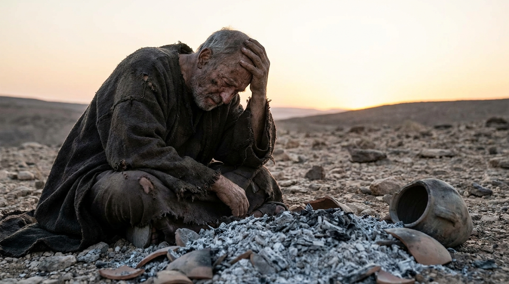

O Sofrimento e a Soberania de Deus
O livro de Jó é uma obra-prima da literatura mundial. Ele narra a história de um homem justo que, de forma repentina e inexplicável, perde sua riqueza, seus filhos e sua saúde. O livro se desenrola através de debates poéticos e intensos entre Jó e seus amigos sobre o motivo do sofrimento. No clímax da história, o próprio Deus responde a Jó a partir de um redemoinho, não dando explicações, mas revelando Sua majestade e sabedoria incomparáveis.
Ficha Técnica
- Autor: Desconhecido (alguns estudiosos sugerem Moisés ou o próprio Jó)
- Tema Principal: O problema do sofrimento humano (teodiceia), a fé provada na adversidade e a confiança absoluta na soberania de Deus.
- Versículo-Chave: "Meus ouvidos já tinham ouvido a teu respeito, mas agora os meus olhos te viram." (Jó 42:5)
Estrutura
- Prólogo: O desafio no céu e a calamidade na terra (Caps. 1-2)
- Os diálogos entre Jó e seus três amigos (Caps. 3-31)
- O discurso do jovem Eliú (Caps. 32-37)
- A resposta de Deus e a restauração de Jó (Caps. 38-42)